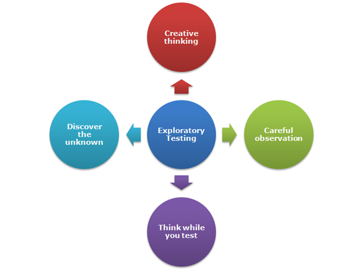
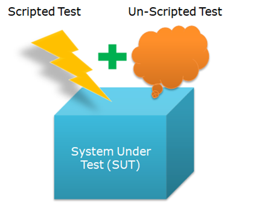
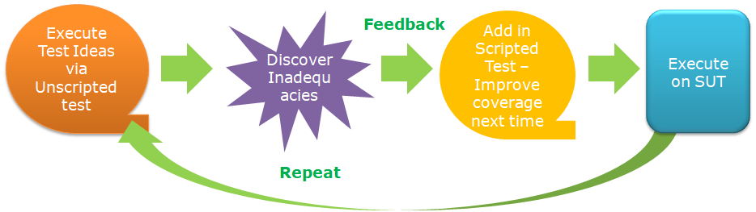
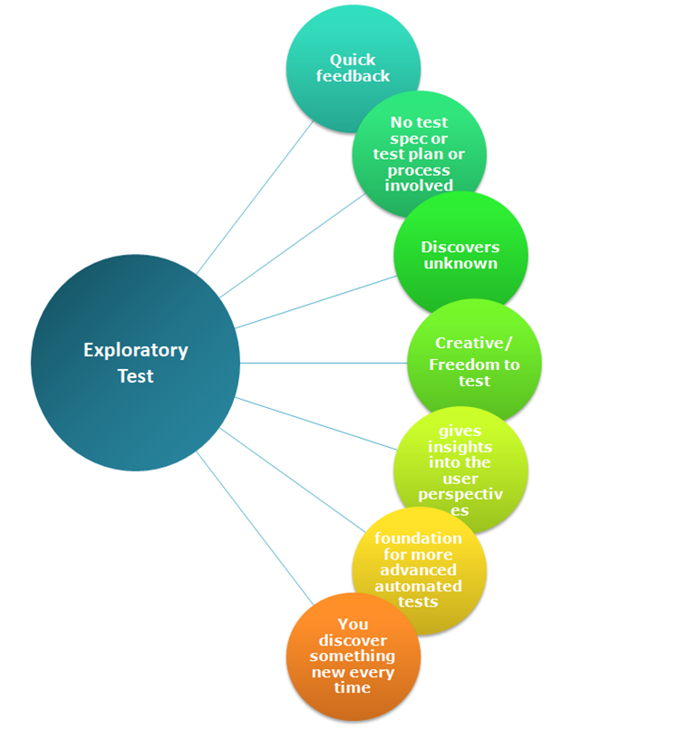

Exploratory Testing – should we or shouldn’t we?
In time with need of frequent releases, test automation accelerates verification as the team needs to get quick feedback on the status of the System Under Test (SUT) for the changes done. The automation suite covers only the known. So, how we deal with the unknown?
We do so via Exploratory testing.
Why:
- The challenge is to find NEW defects, not to look for the same thing over and over and over again.
- This is important since, with automation, we miss the same thing every time with a script!
- Automation can’t think!
Well, personally, I am a big fan of exploratory testing. It gives a new perspective to improve the coverage next time and make me creative to utilize my product learning and experience.
What is Exploratory testing:

- Thinking while you test.
- Continuous learning about the SUT in each iteration making testing more efficient.
- Discovers the unknown, that can later be addressed in the automation test suite.
- You look at a finished product with the intent of discovering inadequacies.
- Unstructured, without a formal plan.
- Select the functionality you want to test and use your creativity/experience.
- You write and execute the scenario at the same time!
- You use your knowledge and experience to predict when the system may behave unexpectedly.
- Discovers the edge cases user may encounter.
How:

Unscripted testing aka Exploratory testing is not a substitute for automation/scripted testing. Your approach should cover both scripted and unscripted testing to deliver a high-quality product.

Benefits:
- Quick feedback
- No test specification or test plan or process involved
- More execution and less planning – saves time
- Discovers unknown – which is not covered in automation suit
- High productivity – as you get the freedom to generate your own scenarios beyond the list of test cases - Well, this does not mean the list of test cases does not cover 100% coverage. Exploratory testing is something you do out of experience and understanding of delving deep apart from acceptance criteria of User stories. You can get more creative.
- Gives insights into the user perspectives e,g, UI of a product is attractive and at the same time easy to use or navigate for users may not be understood by a computer
- Improving its overall design and functioning without the need to undergo a long and planned testing approach.
- Foundation for more advanced automated tests
- You discover something new every time and it’s a continuous process

When and who:
- When you have stringent timelines to release products
- At the beginning of the process, or as part of a final check
- By walk-through of the product
- When you need quick feedback
- When the team has experienced staff/members.
- When a new person joins the team - Fresh set of eyes :)
Exploratory Testing helps discover the unknown. Keep Exploring.